Muscle
Map
Cadastrar
Login
Criar Treino
Calculadora de IMC
Peso (kg):
Altura (m):
Calcular IMC
Escolha um músculo
Selecione
Peitoral Superior
Peitoral Medial
Peitoral Inferior
Deltóide Anterior
Deltóide Lateral
Bíceps Cabeça Longa
Bíceps Cabeça Curta
Braquial
Abdômen
Reto Femoral
Vasto Lateral
Vasto Medial
Adutores
Abdutores
Trapézio
Latíssimo do Dorso
Rombóides
Quadrado Lombar
Deltóide Posterior
Tríceps Cabeça Longa
Tríceps Cabeça Lateral
Tríceps Cabeça Medial
Bíceps Femoral
Semitendíneoso
Semimembranoso
Glúteo Máximo
Glúteo Médio
Glúteo Mínimo
Gêmeos
Sóleo
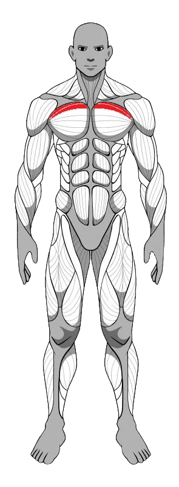
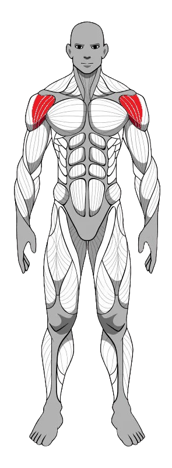
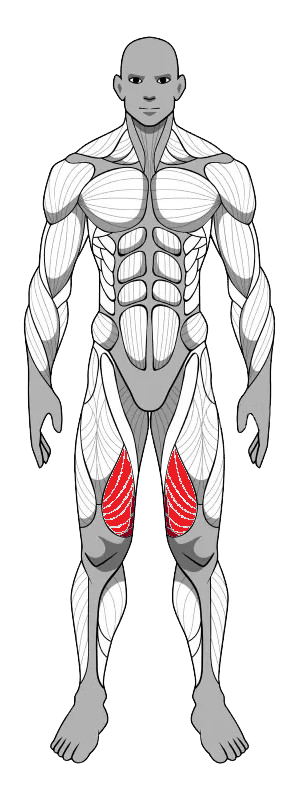 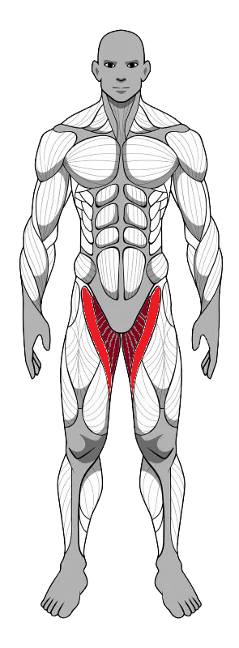
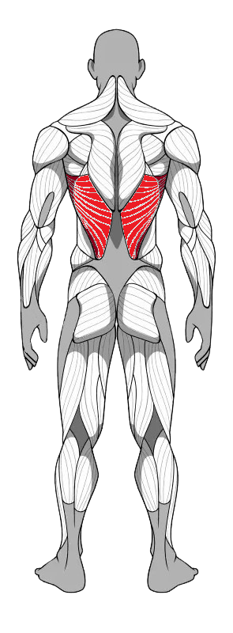
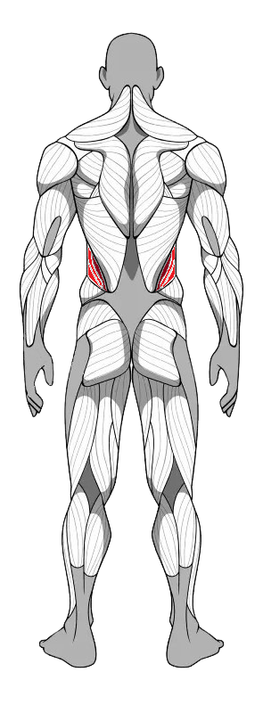
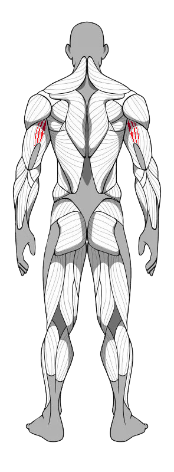 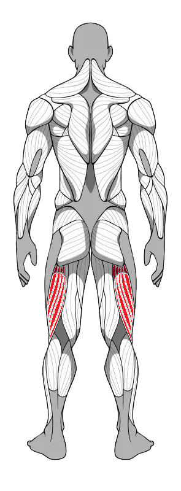 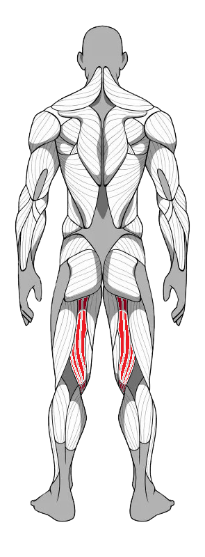 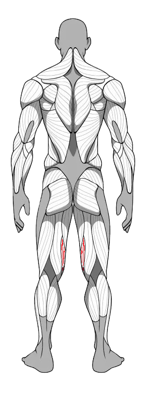
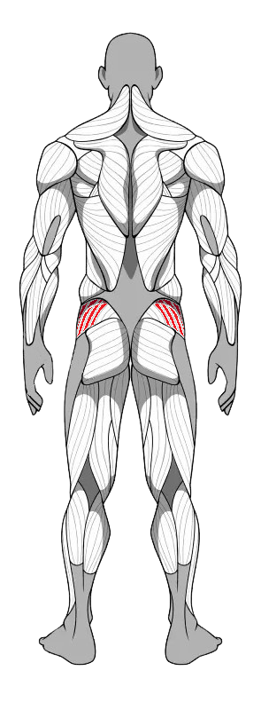
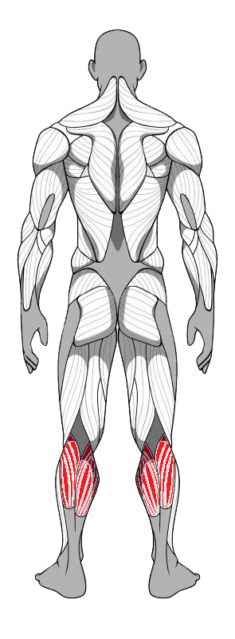 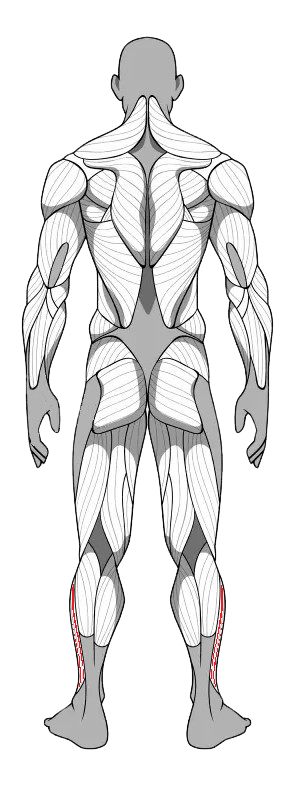
Seu treino


 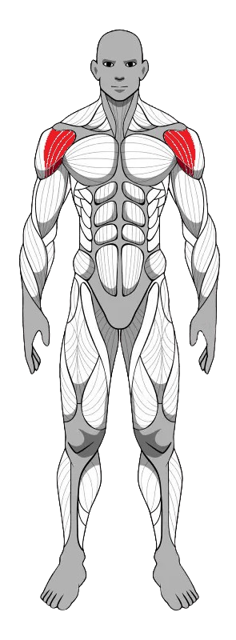
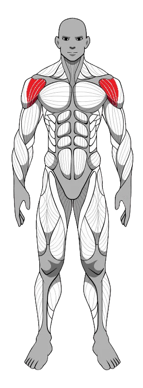


 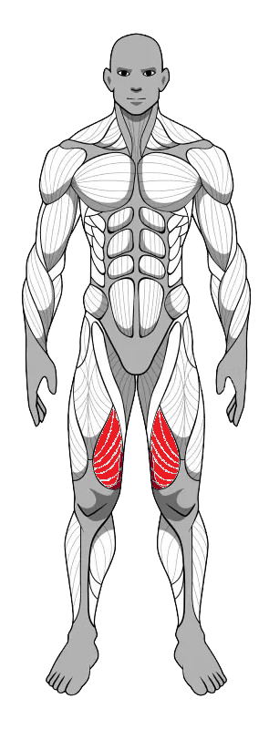
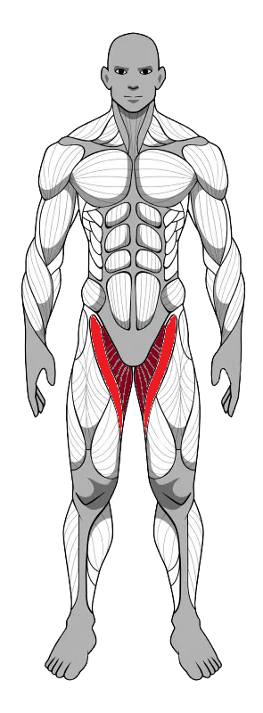
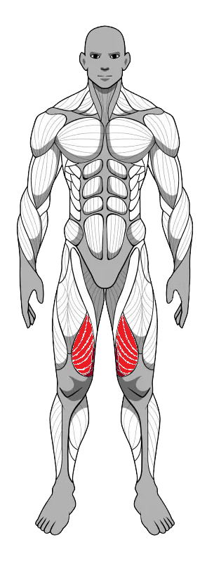
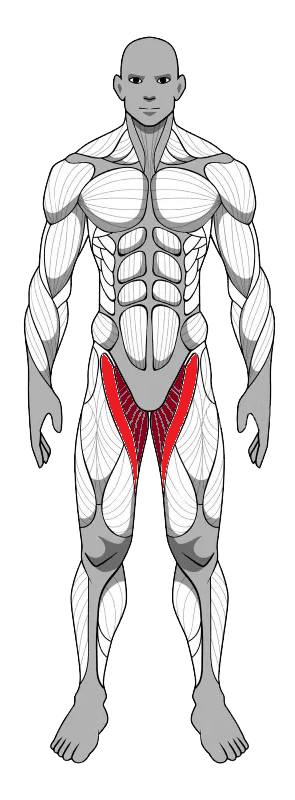

 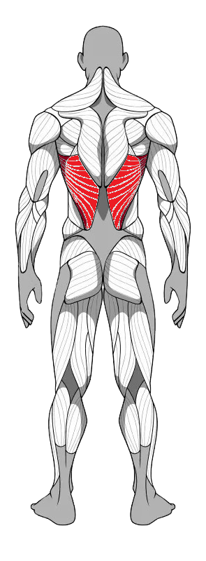
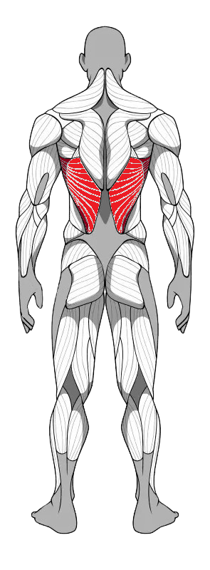
 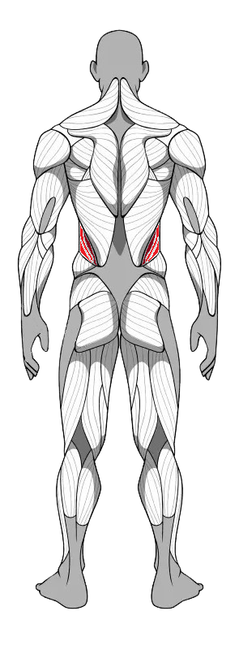
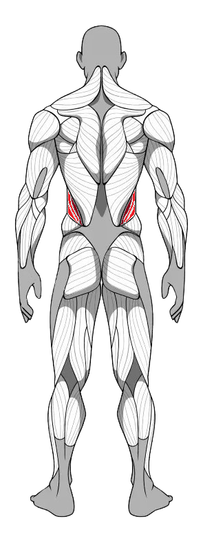


 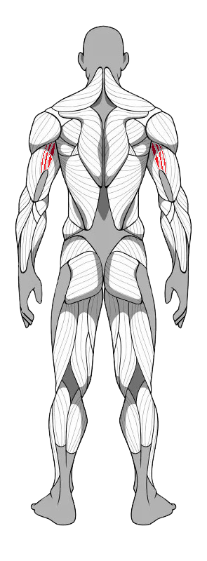
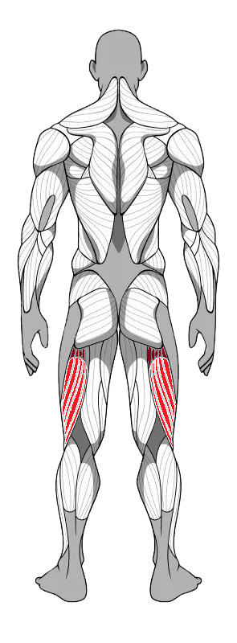
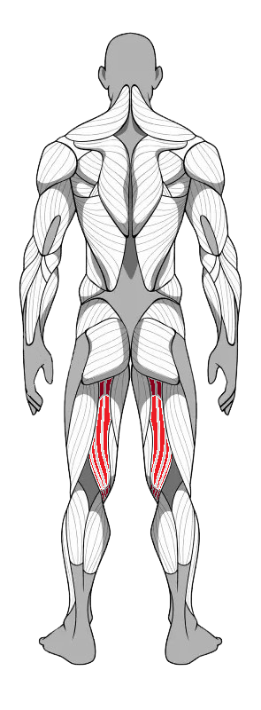
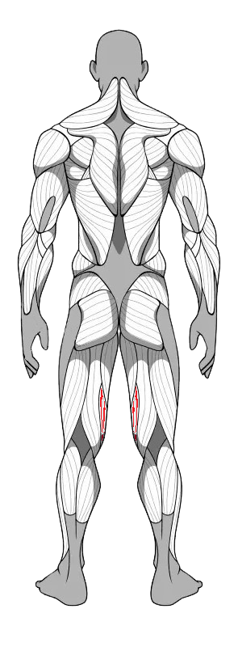
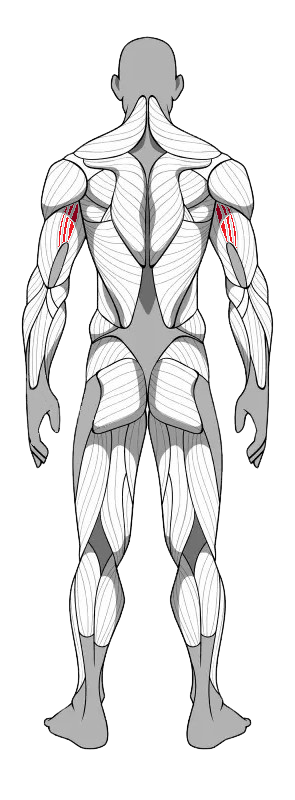
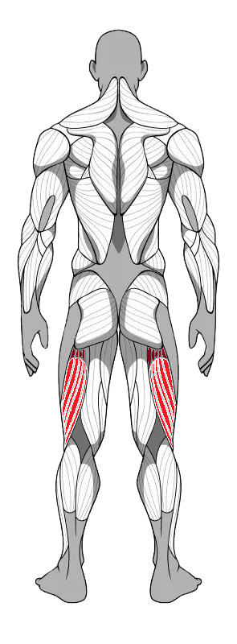
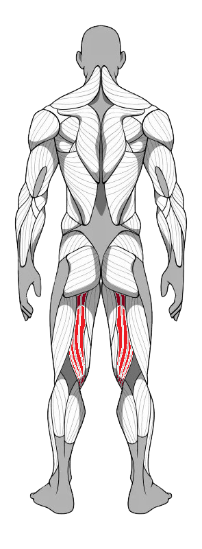
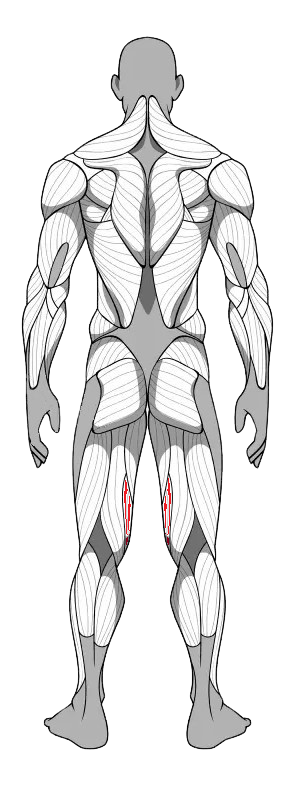
 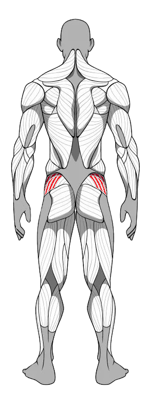
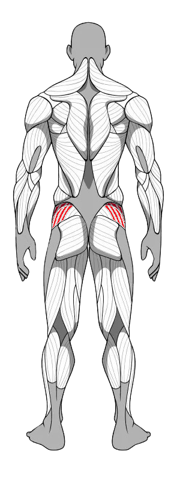
 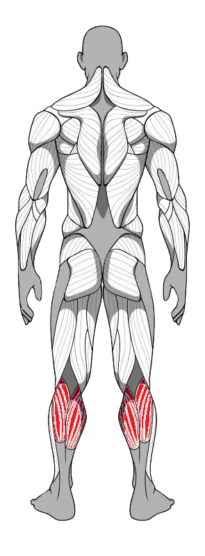
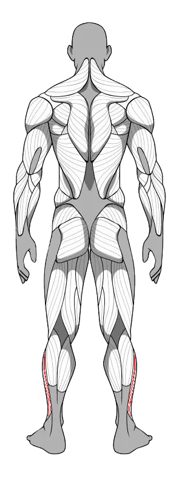
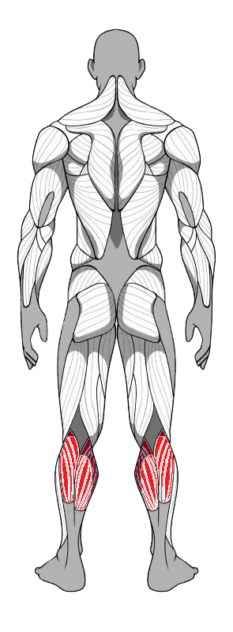
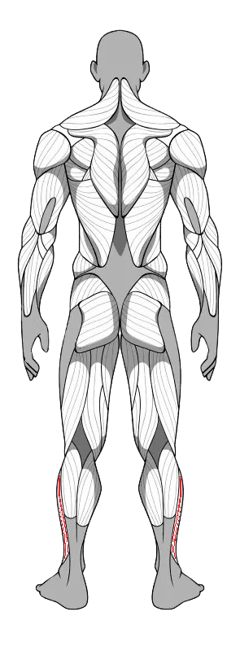